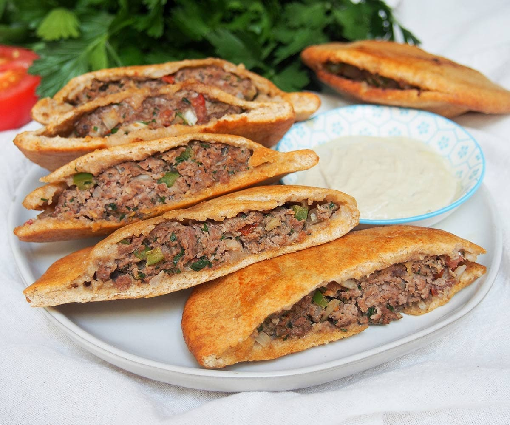

Hawawshi

Description
Hawawshi is a delicious Egyptian dish that consists of spiced ground meat,
usually beef or lamb, stuffed inside a pocket of dough and baked or
grilled to perfection. The meat is seasoned with a blend of aromatic
spices such as cumin, coriander, and paprika, giving it a rich and
savory flavor. The dough encasing the meat becomes crispy on the outside
while remaining soft and fluffy on the inside, creating a delightful
contrast in textures. Hawawshi is often served with tahini sauce, pickles,
and a side salad, making it a satisfying and flavorful meal that is
enjoyed by many in Egypt. Its simple yet comforting taste makes it a
popular choice for lunch or dinner, and it is sure to be a crowd-pleaser
for anyone looking to experience the authentic flavors of Egyptian cuisine.
Ingredients
- 3 baladi bread (or pita pockets)
- 1/4 large onion (or 1/2 of a small/medium onion), finely chopped
- 1/4 green pepper, finely chopped
- 1/2 tomato, finely chopped
- 1 small clove garlic, minced
- 1/2 lb ground beef (80% - don't use lean for this)
- 2 Tbsp chopped parsley
- 1/2 tsp salt
- 1/4 tsp coriander
- 1/4 tsp cumin
- 1/8 tsp paprika
- 1/8 tsp allspice
- 1/8 tsp cinnamon
- 1/8 tsp cardamom
- 1/8 tsp pepper
Steps
- Preheat the oven to 400F. Brush a large baking sheet with a little oil.
- Either cut the bread rounds in half, or cut a slit along the edge on one side, around 2 inches in length.
- Finley chop the onion, pepper, and tomato, and crush or finely chop the garlic.
- Mix together the ground beef, onion, pepper, tomato, garlic, parsley, and spices. Mix everything well so the ingredients are well-distributed - this is often easiest done by hand.
- Divide the mixture between the bread rounds and fill as far as possible, taking care not to break the bread. Spread the filling relatively evenly towards the edges.
- Place the filled bread on the baking sheet and brush both sides of the bread with a little oil.
- Bake in the preheated oven for approximately 15 minutes, then turn and bake for another 5 minutes, approximately, until the bread is browned and gently crisp on both sides and the meat is cooked through. (The center of the filling should register 150-155F when with a thermometer.)
- Best served warm, or they can be served at room temperature. Typically served with tahini sauce on the side to dip.
Recipe source